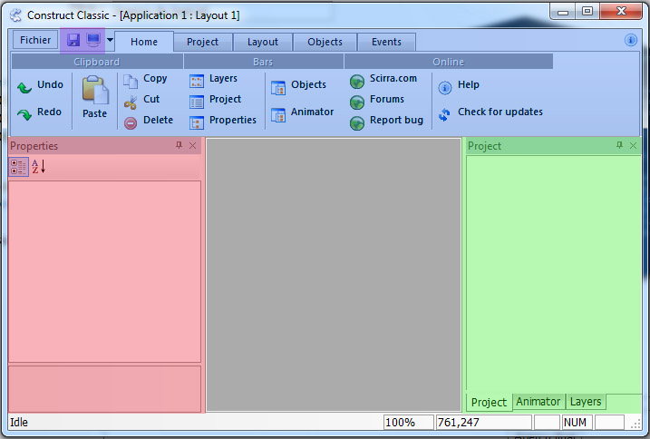
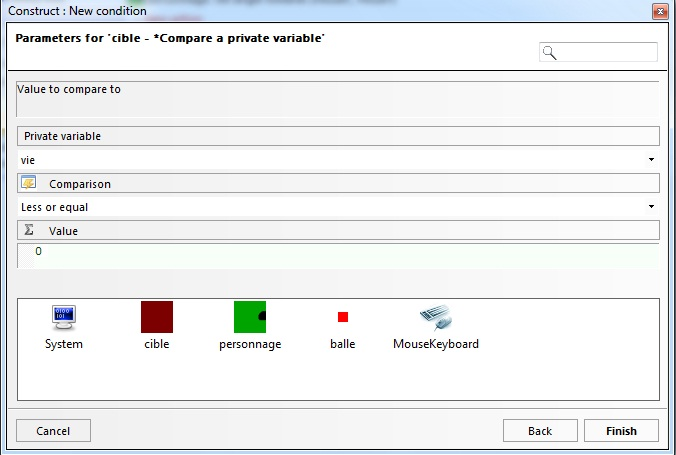

Vous n'avez jamais eu envie de créer vos propres jeux en 2D ? Vous avez tenté plusieurs langages de programmation, mais vous trouvez cela trop difficile ? Ou bien vous préférez créer des jeux beaucoup plus rapidement ? Et bien il existe un programme qui justement, vous facilitera le travail. Attention toutefois, il ne fonctionne que sur Windows. :(
Nous verrons donc au cours de ce tutoriel comment faire plusieurs types de jeu, la méthode restant la même par la suite.
Bonjour et bienvenue dans ce tutoriel ! Vous êtes ici pour apprendre à créer des jeux en 2D sans trop vous casser la tête, rapidement, et simplement ! Tout ceci est bel et bien possible avec Construct. Évidemment, il faut quand même savoir les bases, ce programme ne faisant pas tout tout seul non plus. ^^ Je vais d'abord commencer par vous faire un bref historique de Construct. À la fin de ce chapitre, vous saurez ce dont est capable Construct.
Construct est développé par Scirra. Scirra commença en 2001 en tant que bandes d'étudiants programmeurs dans leur temps libre. C'est de cette manière qu'est né Construct. En 2011, Scirra s'est fait connaitre comme une excitante compagnie de développement avec le but de révolutionner la création de jeux vidéos.
Construct, actuellement et dans le futur
Construct est actuellement à la version Classic r2. Le code ayant mal été structuré, un peu cafouillé, l'équipe a décidé de tout recommencer (et ainsi arrêter le developpement de Construct Classic), donnant naissance à Construct 2. Cette nouvelle version, encore en développement, intégrera le HTML5 (ce qui veut dire que vos jeux pourront êtres joué directement sur le navigateur, génial non ? :D ).
Pourquoi ce tutoriel est pour Construct Classic alors qu'il n'est plus en développement ? :o
Non, Construct est toujours en développement, mais plus par l'équipe. Scirra a donné le code source à la communauté, qui continue de le développer et de corriger quelques bugs. Ayant testé Construct 2, les bases restent les mêmes. Et de toute façon, Construct Classic reste un très bon programme ! De plus Construct 2 n'est pas fini, cela ferait un tutoriel en une page. :lol: Ne vous inquiétez pas, passer de Construct Classic à Construct 2 sera chose facile !
Une communauté active
Construct a un grand point fort : une énorme communauté active. Sa communauté anglophone est nombreuse. Les autres communautés semblent elles aussi plus ou moins nombreuse. Je ne peux rien avancer par contre, ne les fréquentant pas. Pour ce qui est de la communauté francophone, de plus en plus de monde s'y inscrit et elle grandit peu à peu. Elle propose de l'aide sur Construct Classic autant que sur Construct 2. N'hésitez pas à y faire un tour à cette adresse. :)
Performances
Assez bavardé, voyons de quoi est capable Construct :
Points forts :
Gratuit
Puissant
Facile d'utilisation
Très personnalisable
Points faibles :
Uniquement sur Windows (peut-être Linux :euh: )
En anglais
Comparé à d'autres logiciels de ce genre (gratuits comme payants), un des points forts de Construct est sa facilité d'apprentissage, sans pour autant limiter sa puissance.
Vous voulez quelques images ? En voici pour vous mettre l'eau à la bouche (cliquez pour agrandir).
Les possibilités avec ce logiciel sont si grandes qu'il n'y a pour limite que votre imagination ! :p
Jeux réalisables avec Construct
Vous vous demandez surement quels types de jeu nous pouvons réaliser avec Construct. Et bien tout d'abord, uniquement des jeux en 2D. Il y a des moyens de simuler un peu de 3D, mais cela reste au final de la 2D.
Il est donc possible de faire (avec plus ou moins de diffculté) :
Des jeux de plateforme (comme Mario) ;
Des RPGs (comme Zelda) ;
Des Tetris, Pacman, casse-briques, etc.
Vous pouvez faire en théorie tous les jeux 2D que vous voulez.
Qu'en est-il des jeux en réseau ?
Construct n'est pas fait pour faire des jeux en réseau, rien n'y est intégré pour. :( Mais heureusement, il existe une fonctionnalité qu'on peut ajouter sur Construct (ce qu'on appel un plugin), permettant de faire des jeux en réseau local. Nous y reviendrons dans un autre chapitre où nous apprendrons les bases pour en faire, ne vous inquiétez pas. Pour ce qui est du jeu multijoueur online, c'est vraiment pas gagné, mais il y a un moyen à l'aide de Python, j'en parlerai aussi dans un chapitre.
Installation
Installons désormais Construct. Tout d'abord téléchargez le ici. L'installation est simple, cliquez sur suivant tout le temps, ne changez pas de dossier d'installation, pour éviter des problèmes. Il vous sera demandé de mettre à jour DirectX ou bien de l'installer si jamais vous ne l'avez pas. Installez-le quoi qu'il arrive.
Une fois l'installation terminée, vous pouvez lancer Construct, nous verrons son interface dans le chapitre suivant.
Vous avez donc devant vous Construct d'ouvert. Vous l'avez surement remarqué, Construct est en anglais. Mais ne vous inquiétez pas, il n'est pas compliqué à comprendre.
Voyons un petit aperçu du logiciel :

Interface de Construct
J'ai réduit la taille de la fenêtre pour faciliter la capture d'écran, mais on a plus de place en plein écran, pas d'inquiétude. :)
La partie rouge a pour titre Properties, qui signifie en français propriétés. Lorsque nous auront les objets de notre jeu, on ira dedans pour régler certains paramètres, comme changer leur nom. On s'en servira tout le temps ! Par exemple, c'est dans cette partie qu'on choisira le comportement de nos objets.
La partie verte est un ensemble de 3 onglets. Parfois peu utiles au début, ils deviendront incontournables par la suite ! :) On fera avec l'animation des images, et surtout la gestion du projet.
Quant à la partie en bleu, il y a là aussi plusieurs onglets et pleins de boutons. Certains sont utiles, d'autres moins. On s'en servira notamment pour tester son jeu en mode Debug (pour trouver les erreurs dans son jeu), et aussi exporter son jeu en exécutable. À l'intérieur de cette partie bleu, j'ai colorié une zone en violet. Ces deux boutons permettent de sauvegarder
et tester
votre projet.
Création d'un projet test
Maintenant un peu plus familiers avec l'interface, voyons comment créer un nouveau projet. Pour ce faire, cliquez sur Fichier (en haut à gauche) puis sur New et enfin New Direct-X game.
Création d'un nouveau projet
Remarquez que c'est au même endroit où on ouvre et sauvegarde son projet.
Et c'est quoi les deux autres options (New application et New template/example) ?
Content que vous posiez la question ! :D On peut avec Construct créer des jeux et des applications. Je n'en ai volontairement pas parlé dans la partie précédente, je ne vous ai parlé que des jeux (et c'est l'objectif de ce cours). Mais sachez qu'il est tout à fait possible de créer une calculatrice. Certains sont même arrivé à faire un logiciel de dessin ! :) Si vous voulez savoir la différence, un jeu Direct-X utilise plusieurs choses en plus lorsque le programme est lancé, des choses spécifiques aux jeux ! Inutile de faire une synchronisation verticale, ou de gérer le nombre d'image par secondes dans une application, par exemple. ^^
Enfin, pour ce qui est du New template/example, ce ne sont tout simplement que des fichiers d'exemple comme le nom l'indique. En français, template peut se traduire par modèle. On peut partir sur un modèle, contenant juste les bases d'un jeu, et le personnaliser par la suite. :)
Continuons désormais dans la création de notre projet test. Une fois ces manipulations faites, le projet est créé. C'est tout ce qu'il y a à faire !
La zone de travail
Votre projet test est créé :
Projet nouvellement créé
Par rapport à tout à l'heure, ça s'est bien rempli ! Surtout les menus de gauche et de droite. Mais peu importe, nous apprendrons à les utiliser au fur et à mesure. Intéressons-nous sur le centre de la fenêtre. Nous avons une zone blanche, et tout le reste autour (que j'ai coloré en rouge).
Cette partie blanche est la zone de travail. C'est l'espace où votre jeu prend vie, en quelque sorte les limites du monde que vous créez. Vous y créerez votre niveau, placerez votre personnage, vos ennemis, tous les éléments visuels de votre jeu ! Tout ce qui dans cette partie est visible. Et tout ce qui est autour est invisible (comprenez non vu par le joueur). Plus tard on verra comment agrandir cette zone de travail, alors pour savoir où elle s’arrête, vous avez des contours noirs épais. :)
Dans la partie invisible, on mettra parfois des objets dont on se sert pas tout de suite. Par exemple, une image d'explosion, on peut en avoir besoin n'importe quand, alors on la met de coté puis on l'utilisera à souhait. Qu'on ne se trompe pas, on peut aussi réutiliser ce qui est dans la zone de travail, j'ai juste utilisé ces mots pour vous faire comprendre plus facilement.
Tester puis exporter le projet test
Afin de terminer cette partie, testons notre projet. Cliquez sur
et voilà le résultat :
Votre premier projet !
C'est vide et c'est tout à fait normal : on a rien rajouté. ^^
Ne nous arrêtons pas en si bon chemin, voyons comment exporter notre projet. C'est très simple, il suffit de cliquer sur l'onglet Project en haut puis sur Export to EXE.
Exportation étape 1/2
Une fenêtre s'ouvre, n'en tenez pas compte et cliquez sur Next. On vous demande ensuite de choisir le chemin d'exportation de votre jeu. Pour ce faire, cliquez sur Browse. Vous faites comme si vous sauvegardiez un fichier.
Exportation étape 2/2
Il y a plusieurs options pendant l'exportation que l'on peut régler, mais c'est inutile de le faire maintenant, nous y reviendrons plus tard. Une fois toutes les manipulations faites, il ne reste plus qu'à cliquer sur Finish. Et voilà, votre jeu est exporté, vous n'avez plus qu'a l'envoyer à vos amis ! :D
C'est tout pour ce court chapitre d'introduction, vous avez l'outil en main, nous allons donc apprendre à nous en servir, en créant notre première scène.
Vous attendiez ce moment, non ? :p Ça y est, nous allons commencer à faire notre premier projet ! Évidemment, ne vous attendez pas à un jeu révolutionnaire, ce n'est que le début. Mais vous verrez qu'en peu de temps, vous aurez un résultat satisfaisant. :D
Avant de se lancer sur Construct, je vais vous parler des sprites. Tout d'abord, qu'est-ce qu'un sprite ?
Les sprites
Citation : Wikipédia
Un sprite désigne une image qui peut être déplacée par rapport au fond de l'écran.
:euh:
Je vais essayer d'être plus clair : ce sont les images qui constituent votre jeu. Un personnage est un sprite. Une balle est un sprite. Toutes les images de votre jeu sont des sprites. Il y a plusieurs formats d'images, et celui que nous allons utiliser sera le format PNG. Il gère la transparence, et la qualité reste impeccable. On pourra donc faire avec des jeux avec de bons graphismes ! :)
Ouvrez maintenant Construct, vous avez devant vous le menu vu dans le chapitre précédent. Créez un nouveau projet, comme lors du chapitre précédent.
Et si on créait un sprite, ça vous dit ? :D Double cliquez sur votre zone de travail et vous verrez un menu s'ouvrir devant vous.
Le menu objet
C'est le menu objet. À l'intérieur vous avez donc... des objets. :D Ces objets permettrons plusieurs choses dans votre jeu, comme par exemple mettre une lumière, jouer du son, ou même tout simplement afficher une image ! Sélectionnez l'objet Sprite (celui avec une image en forme de rouage). Et oui, un sprite c'est avant tout un objet ! :) Un fois sélectionné, cliquez sur Insert pour l'insérer dans votre projet. Votre curseur à changé, il a pris la forme d'un croix. C'est normal, vous avez crée un Sprite, mais maintenant il faut aussi dire où vous voulez le placer ! Cliquez où vous voulez sur votre zone de travail. Ce n'est pas fini, une autre fenêtre s'ouvre encore. :lol:
Le Picture Editor, ou l'éditeur d'images de Construct
Cette fenêtre qui vient de s'ouvrir s'appelle le Picture Editor. C'est un éditeur d'images, comme notre bon vieux programme Paint. :p Vous pouvez dessiner dessus, faire des carrés, des ronds, des traits... C'est cet éditeur d'images qui va faire le lien entre le jeu et votre image, c'est lui qui va permettre de mettre l'image dans le jeu. Il y a une différence cependant avec Paint, mais nous y reviendrons. ;)
Picture Editor
L'éditeur d'images de Construct
Décrivons la brièvement:
1) C'est un menu horizontal, avec la possibilité de charger/sauvegarder une image, d'inverser l'image, de changer sa taille, etc.
2) Dans ce même menu, deux boutons sont importants : le premier permet de gérer la transparence, et le deuxième le masque de collision. Nous aborderons ces notions bientôt.
3) Ici se trouve toutes les options d'un outil: sa taille, sa dureté, son opacité, etc. Il est aussi possible d'adoucir vos tracés avec l'option Smooth.
4) C'est un menu vertical, comprenant tous les outils nécessaires à la création de l'image.
5)Dans ce même menu, deux outils sont importants : le premier permet de placer un hotspot, le second gère les image points (points d'images).
Vous pouvez alors dessiner dans le carré blanc devant vous, grâce aux outils qui vous sont proposés. Ou bien vous pouvez charger une image à l'aide du menu du haut (en cliquant sur le dossier). Quoiqu'il arrive, au final, ça sera l'image qu'aura votre objet. Une fois votre image chargée ou créée (c'est la même chose), il y a un dernier paramètre à régler. Oui, si il y a un éditeur d'images intégré à Construct, ce n'est pas pour rien. ^^ Dans la barre d'outil de gauche, il y en a deux qui sont intéessants : le hotspot et les points d'image (c'est le 5 de la liste). Nous verrons les points d'image dans le prochain chapitre. Mais intéressons-nous au hotspot. C'est un point qui va définir la position de votre sprite. C'est en quelque sorte son centre de gravité.
Prenons un exemple pour que ce soit clair, avec un homme. Lors d'un déplacement, si son hotspot est au niveau de sa tête, ça sera comme si on le tirait par les cheveux; si son hotspot est au niveau de sa main droite, ça sera comme si on le tirait par la main droite. Donc, dès que vous avez votre image prête, mettez immédiatement le hotspot au centre. :)
Petit détail, mais toutefois très important : l'angle de base des sprites (0 degré) est vers la droite. Si vous dessinez une flèche, dessinez la orientée vers la droite donc. Si vous dessinez un personnage, il doit être tourné et regarder vers la droite ! :)
Toujours pas convaincu ? Téléchargez cet exemple que j'ai préparé pour vous. J'ai volontairement très mal placé le hotspot (il n'est même pas sur l'image, pour vous dire). Déplacez-vous avez les touches du clavier, le résultat parle de lui même.
Une fois votre image prête, fermez la fenêtre de l'éditeur d'images. Une petite fenêtre s'ouvrira pour vous demandez si oui ou non vous voulez sauvegarder l'image. Mettez oui pour la garder. Votre sprite apparaît sur la zone de travail. Allez-y, testez pour voir le résultat.
Zone de travail actuelle
Eh ! Mais pour l'instant ça ne fait rien, je croyais qu'on pouvait faire plein de trucs simplement !
C'est normal, pour l'instant il n'y a qu'une image. :lol: Mais en effet, ça ne bouge pas trop pour l'instant, et comme par hasard, la prochaine partie change cela ! ^^
Juste avant de poursuivre, voyons comment déplacer nos objets (ce n'est pas évident pour tout le monde). Parce que oui, on peut se tromper de place ! ^^ Pas d'inquiétude c'est très simple. Cliquez sur l'objet que vous voulez déplacer et maintenez le clic enfoncé. Déplacez ensuite l'objet où vous voulez qu'il soit, puis relâchez le clic. Et voilà ! :D
Les comportements ! Derrière ce mot se cache d'immenses possibilités pour Construct. Ça nous servira donc à dire quel comportement aura notre image. Et cela en quelques clics à peine ! On va apprendre à s'en servir à l'aide d'exemples. On ne peut pas faire de jeux sans ça. Vous voulez faire un jeu de plateforme ? Il y a un comportement pour ça ! Vous voulez mettre de la physique dans votre jeu ? C'est déjà prêt !
Sur le menu de gauche vous avez plusieurs listes :
Les propriétés d'un objet
Comme le dit la légende de l'image, ce sont les propriétés d'un objet (son nom, sa taille, sa position, etc...).
La propriété qui nous intéresse est la propriété Behaviors, qui va nous permettre de donner un comportement à notre sprite. Appuyez sur le plus [+] pour dérouler la liste, puis une nouvelle option apparaît.
Le menu Behaviors déplié
Cliquer sur Add ajoutera un comportement à notre sprite. Ajoutons-en un ! :) Cliquez et une fenêtre s'ouvre.
Le menu comportement
C'est le menu comportement. Vous pourrez à travers lui choisir le comportement qu'aura votre sprite. Il y a pleins de comportements différents dans Construct, on peut donc faire plein de choses. Celui que nous allons choisir est le premier : les 8 Direction. Ce comportement permettra à notre sprite d'être déplacé avec les touches du clavier, sur 8 directions possibles (haut, bas, gauche, droite, et les diagonales). Une fois sélectionné, cliquez sur Insert pour l'insérer, ce qui nous donne ceci dans le menu Behaviors :
Les paramètres du comportement 8 directions
Vous voyez que le menu s'est agrandi. Grâce à lui nous allons pouvoir paramétrer le comportement de notre sprite. Et c'est ça qui fait que Construct est puissant. Certains programmes de ce genre ne permettent pas de régler les comportements, Construct le permet ! Voici un tableau expliquant les différents paramètres de ce comportement :
Propriété
Signification
This behavior Remove
Permet de supprimer le comportement sur l'objet.
Name
Nom du comportement, qui permettra de le reconnaître plus tard. Nous n'avons pas besoin de changer ce paramètre.
Control
Indique quel joueur contrôle l'objet (joueur 1 (vous), joueur 2, joueur 3).
Max Speed
Vitesse maximum que l'objet peut faire (en pixels par seconde).
Acceleration
L’accélération de votre sprite. Plus elle est élevée, plus votre sprite atteindra vite la vitesse maximum.
Deceleration
La décélération de votre sprite (la vitesse à laquelle il ralentit lorsque vous arrêtez d'avancer). Plus elle est élevée, plus votre sprite s’arrêtera vite.
Rotation
Indique différents types de rotation de l'objet. Si vous mettez 360° votre sprite tournera petit à petit vers là où vous vous déplacez. 8 Directions pour qu'il ne tourne que sur 4 axes possibles, c'est à dire qu'il tournera d'un coup sur la gauche, ou la droite (par exemple). None pour que le sprite ne tourne pas lorsqu'il bouge.
Direction
Permet de choisir si votre sprite se déplacera sur les 8 directions, les 4 directions (haut, bas, gauche, droite), ou bien 2 directions (haut/bas ou gauche/droite)
Les autres comportements ont certains de ces paramètres, mais aussi d'autres qui leurs sont spécifiques. Nous les aborderons ensemble. ;) Testez l'application pour voir ce que ça donne. Si tout va bien, vous devriez pouvoir déplacer le personnage avec les touches du clavier. Sinon, relisez la partie pour voir ce qui ne va pas. N'hésitez pas à changer certains paramètres pour voir ce que ça donne. Essayez de faire qu'on puisse se deplacer dans 4 directions et non 8, vous verrez ! :) Remettez-le à 8 directions une fois que vous avez terminé de vous amuser. ^^
Ne nous arrêtons pas en si bon chemin et découvrons un nouveau comportement : bullet. En français c'est une balle de pistolet. Un objet avec ce comportement ira tout droit comme une balle. Ça reste logique : une balle de pistolet se comporte comme tel. Vous avez envi de faire des lasers ? C'est la même chose, utilisez le comporte bullet !
Avant de poursuivre nous allons ajouter un autre sprite à notre zone de travail (double clic, relisez plus au dessus si vous avez oublié comment faire). Cette image aura la forme d'une balle, un carré ou un rond feront l'affaire. Quittez l’éditeur d'images puis ajoutez-lui un comportement (c'est toujours le même menu qu'avant).
Le menu comportement, encore une fois
Cette fois-ci nous allons choisir Bullet puis l'insérer à l'aide du bouton Insert. Pas besoin de toucher aux paramètres cette fois-ci, nous pouvons tester l'application.
La balle avance tout droit ! :o
C'est normal, elle se comporte comme une balle : elle va tout droit. Pour l'instant, cette balle ne sert pas à grand chose. Mais dans le prochain chapitre vous verrez qu'elle va changer le monde beaucoup !
Sauvegardez-votre projet, on continue à travailler dessus au prochain chapitre.
Voila, nous avons fait notre première scène ! Vous aurez remarqué que les behaviors donnent complètement vie à votre jeu. Et la magie se fait seulement en quelque clics, je sais je me répète, mais c'est une des choses qui rend Construct si puissant ! :magicien: Allez, on se donne rendez-vous au prochain chapitre où nous aborderons les évènements ! :D
Dans le chapitre précédent nous avons vu comment ajouter un sprite et lui donner un comportement. Construct est puissant, mais il ne va pas tout faire tout seul non plus. :p Nous allons donc continuer dans une première partie avec les évènements, puis dans une seconde partie nous verrons ce qu'est le monde des variables ! :)
Commençons par voir ce qu'est un évènement. Lorsqu'il se passe quelque chose, un évènement a lieu. Pour bien vous faire comprendre : lorsque l'on appuie sur une touche du clavier, il se produit un évènement, quand on bouge la souris, il se produit un évènement. Ces évènements sont comme des messages envoyés à votre jeu pour lui dire qu'il s'est passé quelque chose.
Ressortez le projet du chapitre précédent, nous allons travailler dessus (je vous l'avais dit ! ^^ ). Si vous ne l'avez plus, le voici : ici. Nous avons donc devant nous 2 sprites : un qui se déplace avec les flèches du clavier (les 8 directions) et un autre qui va tout droit (la balle). Ce que nous voulons faire au cours de ce chapitre est de pouvoir tirer des balles lorsque l'on clique sur la souris.
Vous devez vous demander à quoi sert la balle. Pour l'instant, mettons-la en dehors de notre zone de travail, pour ne pas qu'elle gène (placez-la comme sur la prochaine capture d'écran). Si vous essayez l'application, il n'y aura plus la balle. C'est normal on vient de l'enlever. ^^
Pour pouvoir utiliser le clavier et la souris, il va falloir rajouter un objet : Mouse & Keyboard. Double-cliquez sur la zone de travail pour rajouter cet objet. Vous remarquerez qu'il n’apparaît pas devant vous : cet objet n'a pas d'apparence, il sert juste à dire qu'on va se servir du clavier et de la souris.
Mais alors pourquoi on a pu bouger le sprite avec les flèches du clavier ? :o
Nous avons ajouter au sprite un comportement : les 8 directions. Construct lui permet donc d'être déplacé avec les touches du clavier. Si nous rajoutons l'objet Mouse & Keyboard, c'est pour pouvoir s'en servir avec les évènements. Vous allez comprendre.
Le layout actuellement
Si vous regardez en bas, vous verrez marqué Event Sheet Editor qui signifie éditeur de feuille d'évènement. C'est par là que nous allons dans ce chapitre créer des évènements ! :D Mais avant de poursuivre, nous allons régler un petit quelque chose pour mieux nous repérer. Si vous regardez bien, pour l'instant nos sprites n'ont pas de nom (ou plutôt des noms à la suite : sprite1, sprite2). Ici, il n'y en a que deux, pour l'instant tout va bien ! Mais dès que vous en aurez des dizaines, ou même plus de 50... :euh: On se perd facilement.
Nous allons alors prendre une habitude dès maintenant. Chaque fois que l'on va créer un sprite, on va le renommer directement ! Pour bien commencer, renommons nos deux sprites déjà existant. Sélectionnez le premier sprite (le personnage) puis observez le menu de gauche.
La propriété Common (commun) déroulée (uniquement le premier élément de la liste)
Déroulez le menu Common. Comme pour les comportements, les objets ont eux aussi des paramètres. Le premier est le nom de votre sprite. Cliquez sur son nom actuel (Sprite1), renommez-le en tapant sur votre clavier : personnage puis appuyez sur la touche Entrée. Sélectionnez ensuite le second sprite (la balle), faîtes de même et appelez-la balle. Voila, c'est mieux maintenant ! :)
Et attention à celui qui oublie maintenant ! :colere2:
Nous pouvons désormais attaquer les évènements : cliquez sur l'onglet Event Sheet Editor.
L’éditeur de feuille d'évènement alias l'Event Sheet Editor
Nous avons donc devant nous l'éditeur de feuille d'évènement (que j’abrégerais désormais par éditeur d'évènements). Nous allons commencer par ajouter un évènement. Pour ce faire, c'est très simple, faites un clic-droit dans l'espace blanc devant vous. Il y a plusieurs choix possibles, nous permettant d'ajouter un évènement, un script (nous verrons ceci dans une prochaine partie), ou un commentaire. Je m'attarderai sur les commentaires plus loin. Cliquez sur Insert Event (ajouter un évènement) pour ajouter un évènement, une fenêtre s'ouvre alors.
Cette fenêtre permet d'ajouter un évènement
Avant de continuer, voyons comment se constitue un évènement. Grâce à l'éditeur d'évènements, nous pourrons intercepter un évènement pour pouvoir ensuite faire une action. Par exemple, on peut tout à faire dire : "Si on clique sur le bouton Jouer, alors commence une nouvelle partie.". On retiendra donc que lorsqu'il y a un évènement qui se produit, on effectue une action.
Revenons à notre fenêtre dans l'éditeur d'évènement. Nous avons devant nous pour l'instant 4 objets à choisir :
System
balle
personnage
MouseKeyboard
Pourquoi plusieurs choix et pas tout regroupé dans un même endroit ?
Premièrement, on s'y retrouve mieux. Ensuite, ça va nous permettre de choisir l'évènement en rapport avec notre objet ! Par exemple si l'on souhaite savoir quand le personnage se déplace, on regardera les évènements dans l'objet personnage. Si l'on souhaite savoir si la balle a touché quelque chose, on regardera les évènements dans l'objet balle, et ainsi de suite. L'objet System, quant à lui, c'est un peu tout le reste. Nous regarderons les évènements du System quand on voudra savoir plusieurs choses sur le système comme par exemple lorsqu'un objet est créé, chaque seconde, au début du jeu, etc.
Assez parlé, ajoutons cet évènement. :) Qu'allons-nous faire ? Nous souhaitons que : -> À tout moment, le personnage se tourne vers la souris (on dit s'oriente vers la souris). Séparons cette phrase pour repérer l'évènement et l'action, ce qui donne :
-> À tout moment, le personnage se tourne vers la souris.
L'évènement
Commençons par l'évènement : à tout moment, qui peut se traduire aussi par toujours. Ça n'a pas de rapport avec le personnage, ni avec la balle. Nous allons donc regarder au niveau du Système ! Cliquez sur System, puis sur Next (suivant).
Cette fenêtre permet d'ajouter un évènement dans la catégorie System
Comme vous le voyez, il y a beaucoup d'évènements ! ^^
Vous devez remarquer qu'il y a du texte en bleu et du texte en noir. Tout ce qui est en bleu sont des groupes d'évènements, et ce qui est en noir sont les évènements dans ces groupes. Par exemple prenons le premier groupe, Collisions. En dessous il y a plusieurs évènements relatifs à la collision entre objets. Si nous traduisons en anglais notre évènement (toujours), on obtient always. Allez chercher l'évènement Always dans le groupe System. Cliquez dessus, puis sur Finish (terminer).
L'évènement s'est rajouté ! :D
L'action
Continuons ensuite avec l'action : le personnage se tourne vers la souris. Pour ajouter une action, cliquez à côté de l'évènement où vous voulez ajouter l'action, sur + New action. Une fenêtre similaire à celle des évènements s'ouvre. Cette fois-ci, il y a un rapport avec le personnage (bah oui, on veut qu'il se tourne ^^ ). Cliquez alors sur personnage puis sur Next (suivant).
Là aussi, il y a beaucoup d'évènements ! Et on retrouve aussi nos groupes d'évènements. Nous souhaitons que notre objet personnage s'oriente vers la souris, nous allons donc voir du côté des angles ! Par chance, il se trouve juste devant nous, c'est le premier groupe. :D Nous avons devant nous plusieurs évènements possibles, mais lequel choisir ? :euh:
Comparons-les à l'aide d'un tableau, pour ensuite choisir.
Action
Explication
Rotate clockwise
Cette action permet de tourner le personnage dans le sens inverse ou non des aiguilles d'une montre.
Rotate counter-clockwise
Rotate towards a position
Cette action permet de tourner le personnage vers une position définie, ou vers un autre objet.
Rotate towards another object
Set angle
Cette action permet de changer l'angle du personnage d'un montant défini, vers un objet, ou vers une position.
Set angle towards an object
Set angle towards position
On peut déjà éliminer les deux premiers évènements, on ne veut pas que le personnage tourne autour de lui même. On peut ensuite éliminer les évènements qui tournent le personnage vers un objet : oui, la souris n'est pas considéré comme un objet ! Enfin, on peut aussi éliminer Set angle.
Il nous reste donc Rotate towards a position et Set angle towards position. En français, Rotate towards a position signifie Faire tourner vers une position et Set angle towards position signifie Définir l'angle vers une position.
Quelle est la différence entre les deux ?
Ils sont presque identiques, mais il y a quand même une subtilité. Dans le premier cas, le personnage tournera progressivement vers la position. Dans le second cas, le personnage tournera directement vers la position. Nous allons donc choisir le deuxième, pour que le personnage tourne directement. Cliquez sur Set angle towards position puis sur Next.
Dans la fenêtre qui suit, deux paramètres vous sont demandés. Et oui, on a demandé à notre personnage de tourner vers une position, mais encore faut-il préciser quel est cette position ! ^^ Nous voulons que le personnage se tourne vers la souris, une question se pose alors :
Comment on sait les positions de la souris ? C'est jamais les mêmes ! :o
Oui ! :) Ce que nous allons utiliser ici s'appellent des variables. Nous allons voir ceci en deuxième partie.
Les paramètres de l'action (mouseX et mouseY correspondent aux coordonnées X et Y de la souris)
Contentez-vous pour l'instant de remplir comme dans la capture d'écran, vous comprendrez par la suite. Cliquez ensuite sur Finish (terminer). :)
L'action s'est rajoutée ! :)
Et regardez bien, on peut presque lire naturellement la feuille d'évènements ! Si on le traduit en français ça donne donc : à chaque instant, définir l'angle du personnage en direction de la souris. Essayez le programme. Si vous arrivez à tourner votre personnage jusqu'à lui en donner mal à la tête, tout va bien !:D
La balle
Maintenant qu'on a notre personnage qui tourne autour de la souris, nous pouvons continuer en nous occupant de la balle. Alors cette fois-ci, qu'allons nous faire ? Nous souhaitons que : -> Lorsque l'on clique gauche sur la souris, tirer une balle partant du personnage. Séparons cette phrase pour repérer l'évènement et l'action, ce qui donne :
-> Lorsque l'on clique gauche sur la souris, tirer une balle partant du personnage.
L'évènement
Comme tout à l'heure (et à chaque fois), on commence avec l'évènement : lorsque l'on clique sur la souris. Ça n'a pas de rapport avec le personnage, ni avec la balle.
On va voir le système alors ! :soleil:
Bien tenté, mais non. ^^
Rappelez-vous, au début du chapitre, je vous ai fait ajouter un objet : le clavier et la souris (Mouse & Keyboard en anglais). Nous allons maintenant nous en servir. Cliquez sur Mouse & Keyboard puis sur Next. Vous remarquez qu'il y a beaucoup moins d'évènements ! Tant mieux. :p Il y a trois groupes ici, celui qui va nous intéresser est Mouse (la souris). Lequel choisir ?
Ce n'est pas les deux premiers, on veut que l'action se passe lorsque l'on clique ! Les deux suivants, On any click et On click sont ceux qui nous intéressent : lorsque l'on clique. Il y a une différence entre les deux.
Je sais ! Il y en a un, c'est pour n'importe quel clique, et le deuxième on choisit le clic qu'on veut !
Oui c'est ça ! :)
Et vu que nous voulons que ce soit lors d'un clic gauche, nous choisissons On click ! :D Cliquez sur On click puis sur Next. Cette fois-ci, vous n'avez rien à écrire, il y a une liste pour vous. Le premier paramètre est Mouse Button qui est le bouton à choisir (gauche, milieu, ou droit). Le second paramètre permet de définir quel type de clic nous voulons : clic simple, double clic, ou les deux. Choisissez les deux, ça évitera des problèmes. :p
La condition On click.
Une fois bien paramétré, cliquez sur Finish (terminer).
La condition s'est rajoutée ! :D
L'action
Cette fois nous continuons avec l'action : tirer une balle partant du personnage. Comme tout à l'heure, cliquez sur + New action afin de rajouter une action. La même fenêtre s'ouvre encore. Là, on parle de la balle et du personnage. Que choisir ? Ça a un rapport avec la balle ET le personnage. Si nous lisons bien l'action que l'on souhaite, on souhaite tirer une balle partant du personnage. C'est donc de lui que va sortir la balle. Cliquez sur le personnage puis sur Next. C'est la même fenêtre que tout à l'heure. Nous souhaitons que la balle parte du personnage, le personnage devra donc créer la balle. Si vous cherchez un peu, vous verrez le groupe Creation, c'est exactement ce qu'on veut ! Et là, on a pas trop le choix, il n'y a qu'une action ! :D Cliquez sur Spawn another object (engendrer un objet) puis sur Next.
L'action Spawn another object
Cette fois, vous n'avez pas de liste comme pour la souris. ^^ Vous avez du texte, comme précédemment, mais aussi un bouton qui va vous permettre de dire quel objet créer : c'est le bouton Pick an object (en français, choisir un objet). Cliquez dessus, et choisissez la balle (cliquez dessus puis sur OK). Pour les deux autres paramètres, laissez-les comme ils sont pour l'instant, nous les verrons après. Cliquez sur Finish (terminer) pour valider.
L'action s'est rajoutée :D
Nous pouvons encore traduire directement pour voir ce que ça donne : lorsque l'on clique gauche sur la souris (clique ou double-clique), le personnage crée une balle sur le calque 1 (au point d'image 0) (ne vous intéressez pas à cette histoire de calque et de point d'image pour l'instant, nous allons voir ce que c'est plus tard). Testons l'application pour observer le résultat. Si tout va bien, votre personnage devrait tirer lorsque vous cliquez gauche sur votre souris. :)
Eh, mais il y a un problème là ! :colere2:
Oui. :p La balle part du centre du personnage, c'est moche. En fait, c'est tout à fait normal, car la balle est, par défaut, créée à l'endroit du hotspot de notre personnage, et vu qu'on le place au centre, la balle part du centre. Je vous arrête tout de suite, nous n'allons pas changer de place le hotspot. Cela poserait beaucoup plus de problèmes que de changer l'endroit d'où part la balle (rappelez-vous l'image que je vous avais montré dans le chapitre sur les sprites). Pour palier ce problème, nous allons voir les points d'image.
Les points d'image : de retour dans l'éditeur d'images !
Dans le chapitre précédent, je vous ai parlé de l'éditeur d'images, et décrit brièvement les outils. Nous allons nous pencher sur un de ces outils : le point d'image
. Ces points d'image vont nous permettre de spécifier un endroit de notre sprite, pour décider où nous voulons que notre balle se crée. Pour créer un point d'image, retournez dans l'éditeur d'images. Pour ce faire, revenez tout d'abord sur la zone de travail (en cliquant sur Layout Editor à gauche de Event Sheet Editor). Ensuite, double-cliquez sur le sprite personnage, et l'éditeur s'ouvre. Cliquez ensuite sur l'outil point d'image
pour sélectionner l'outil. Avant de placer le point image, nous allons le créer. Regardez les options de cet outil :
Options de l'outil point d'image
Par défaut, un point d'image est créé, nommé point, aux coordonnées (0;0). Mais nous n'allons pas nous en servir. Nous allons créer le notre. Cliquez sur le [+] pour ajouter un point image. Une fenêtre s'ouvre alors.
Étapes de la création d'un point d'image
Dans le champ de texte supérieur, entrez ici le nom de votre point d'image. Appelons-le "tir" (c'est de ce point que le personnage tirera je vous le rappelle ^^ ). Marquez tir dans le champ puis cliquez sur Add pour créer le point d'image. Celui-ci s'est rajouté à la liste ! :) Cliquez ensuite sur Close pour fermer la fenêtre. Il faut par la suite sélectionner le point d'image que l'on vient de créer (nous en avons deux : point et tir). Cliquez sur la flèche du menu déroulant, puis choisissez tir.
Choix du point d'image
Vous pouvez désormais cliquer pour placer le point d'image. Placez-le à droite, comme sur l'image, car les sprites sont tournés à droite par défaut je vous rappel.
Emplacement du point d'image tir
Nous pouvons enfin fermer l'éditeur d'images. Retournez maintenant dans l'éditeur d'évènements, nous allons modifier l'action qui crée la balle. Faites un clique-droit dessus, puis cliquez sur Edit action. Dans le champ Image Point, rentrez "tir" (attention à bien mettre les guillemets !) puis cliquez sur Finish (terminer). Vous pouvez tester l'application, la balle part bien de la où il faut ! :D
Que diriez-vous d'ajouter des cibles pour qu'on puisse tirer dessus ? :D
Nous allons voir au cours de cette partie ce que sont les variables !
C'est quoi une variable ?
Une variable est comme une boite où l'on va stocker une information, pour pouvoir la réutiliser après. On peut par exemple stocker un nombre, ou du texte. Et ce nombre peut varier pendant que tourne votre jeu (d'où le nom de variable ^^ ). Vous en avez peut-être déjà entendu parler, mais ne craignez rien, Construct se charge presque de tout. :) Vous avez juste à retenir qu'une variable permet de stocker une valeur en mémoire dans l'ordinateur. Si vous souhaitez des exemples de variable, il y en a plein ! La vie du personnage, le nombre de balles, les dégâts infligés, le temps écoulé depuis le lancement de votre jeu, ce sont toutes des variables. Il y en a évidemment plein d'autres.
Les variables dans Construct
Vous allez voir comment ça marche. Commencez par ajouter un nouveau sprite à la zone de travail, que vous nommerez cible (regardez le chapitre précèdent si vous avez oublié ^^ ). Je l'ai placé de cette manière :
La zone de travail (layout) actuellement (Cliquez pour agrandir)
Ce que nous voulons faire (évènement, action) :
Lorsque l'on tire sur une cible, enlever un point de vie à la cible.
Lorsque la cible n'a plus de vie, détruire la cible.
L'évènement : lorsque l'on tire sur une cible
Commençons par le premier évènement. Comment faire pour savoir lorsque l'on tire sur une cible ? En fait c'est un peu subtil : lorsque l'on tire sur une cible, c'est que la balle a touché une cible. On peut donc reformuler de cette manière : lorsque la balle touche une cible. Allons donc dans l'éditeur d'évènements, et rajoutons un nouvel évènement. Que choisir ici ? Ça à un rapport avec la balle et la cible. Nous pouvons choisir celui que nous voulons, mais par habitude je choisis toujours le premier (libre à vous de faire comme moi ou pas, c'est la même chose :p ). Cliquez sur la balle puis sur Suivant.
Maintenant, comme auparavant, il faut choisir quel est la bonne catégorie. Lorsque la balle touche une cible. En cherchant, on remarque qu'il y a bien un groupe Collisions. :) Choisissez On collision with another object, puisque l'on souhaite que l'évènement ait lieu lorsque la balle touche une cible. Cliquez sur suivant.
Mais, ils servent à quoi les deux autres ?
Celui que nous avons choisi permet de savoir lorsque la balle est en collision avec la cible. Les deux autres permettent de savoir lorsque la balle superpose la cible (quand la balle est sur la cible). La différence entre les deux est une histoire de position par rapport à la cible. On pourra savoir par exemple si la balle est sur la cible (premier évènement), ou prévoir si la balle sera sur la cible 100 pixels plus loin par exemple (second évènement).
Là c'est comme tout à l'heure, vous avez un bouton. Cliquez dessus pour choisir l'objet de collision, en l’occurrence c'est notre cible. :) Puis cliquez sur terminé pour fermer la fenêtre.
L'action : enlever un point de vie à la cible
Ça y est, nous avons ajouté l'évènement. Maintenant, il nous faut ajouter l'action. Comment enlever un point de vie à la cible ? Pour l'instant elle n'a pas de vie ! :euh: Souvenez-vous des variables, je vous avais dit que grâce à elles, on pouvait stocker des informations. Ce que je ne vous ai pas dit, c'est qu'on pouvait soit stocker dans l'ordinateur, soit dans un objet !
Ça change rien au problème, mon personnage n'a toujours pas de vie !
Pas pour l'instant, non. C'est pour ça que nous allons créer une variable "vie", que nous stockerons, comme je viens de vous le dire, dans notre cible ! :)
Voyons comment ajouter une variable à notre cible. Revenez tout d'abord sur la zone de travail (en cliquant sur Layout Editor à gauche de Event Sheet Editor). Puis sélectionnez l'objet cible.
Vous allez voir que c'est pareil que pour les comportements. Jetez un oeil au propriétés de notre objet (sur le menu de gauche). Devant toutes ces listes, nous en connaissons une : les comportements. Mais cette fois nous allons en voir une autre : les variables. Déroulez alors le menu Private variables et vous obtenez ceci :
Le menu Private variables déplié
Si nous traduisons, Private variables donne variables privées. Je vous ai dit tout à l'heure que chaque objet avait ses propres variables. Mais nous verrons plus tard qu'il est aussi possible de créer des variables globales. Revenons à notre cible et cliquez sur Add / Edit pour ajouter une nouvelle variable. Un menu s'offre à vous :
Le menu gestionnaire de variables
Ce menu est le gestionnaire de variables. C'est ici que vous allez gérer toutes les variables de votre objet, ici c'est notre cible. Vous avez la possibilité d'ajouter une variable (
), supprimer une variable (
), d'éditer une variable (
) et de réorganiser leur place (
). Je vous rappelle, nous souhaitons ajouter de la vie à notre cible. En d'autres termes, lui ajouter une variable vie. Ajoutez une variable en cliquant sur
. Les réglages sont simples : le nom de la variable (Name), le type de la variable (Type : nombre ou texte), et la valeur de la variable au début du programme (Initial). Je précise bien, pour la valeur de la variable, au début du programme car une variable change au cours de votre jeux.
Ajout de la variable vie
Remplissez les champs comme il le faut, puis cliquez sur OK pour valider. J'ai choisi 3 de vie par hasard. Vous pouvez tout à fait choisir 1, 10 ou 50. C'est comme vous voulez ! ^^ De retour sur le gestionnaire de variables, la variable vie apparaît devant vous. Vous pouvez cliquer sur Done (Fait) pour fermer cette fenêtre. Le menu Private variables a changé : notre variable vie s'est rajoutée, avec sa valeur initiale à coté.
C'est fait ! Notre cible a enfin de la vie ! :D Retournons désormais dans l'éditeur d'évènements. Enlever un point de vie à la cible. La variable vie est la vie de notre cible. Pour enlever un point de vie à la cible, il suffit alors de soustraire 1 à la variable vie ! :)
Ajoutez une action, à coté de l'évènement de collision. On se pose toujours la même question : avec quel objet cette action a t-elle un rapport ? Avec la cible, donc nous allons voir les actions du coté de la cible ! Cliquez sur cible puis sur suivant. Nous voulons changer la valeur de la variable vie. Il faudra donc regarder dans le groupe des variables, plus particulièrement le groupe Private variables. Vous pouvez ajouter un nombre à une variable (Add to value), définir une valeur à une variable (Set value), et soustraire une valeur à une variable (Substract from value). C'est le troisième choix qui nous convient : Enlever un point de vie à la cible. Cliquez sur Substract from value puis sur suivant.
Dans le menu devant vous, une liste vous propose de choisir la variable à soustraire, nous n'en avons qu'une, la variable vie, donc nous n'avons pas vraiment le choix. ^^ En dessous, dans la valeur de la variable, mettons 1 car nous souhaitons diminuer de 1 la vie de notre cible.
Les paramètres de l'action
Une fois terminé, cliquez sur Finish pour fermer la fenêtre.
L'action s'est rajoutée :)
Si vous essayez l'application, non seulement la cible ne meurt pas après lui avoir tiré dessus au moins 3 fois, mais en plus la balle traverse la cible. Avant de continuer, rajoutons une autre action pour corriger ce problème de la balle qui traverse la cible. Cliquez sur + New Action en face de l'évènement de collision, pour rajouter une deuxième action à cet évènement.
Nous souhaitons que la balle se détruise.
Allez, essayez de l'ajouter tout seul, ça sera un bon petit exercice. Posez-vous les mêmes questions à chaque fois. Avec quel objet l'action a-t-elle un rapport ? Dans quel groupe se situe l'action que je cherche ? (La plupart du temps, quand on ne sait pas où elle est, il suffit de chercher ^^ ).
Nous souhaitons que la balle se détruise. Avec quel objet l'action a t-elle un rapport ? Avec la balle, bien sur ! :D
Cliquez alors sur balle puis sur suivant. Nous souhaitons détruire la balle. Détruire, en anglais, se traduit par Destroy. En cherchant bien, on trouve Destroy, dans la catégorie Misc (pour Miscellaneous, qui signifie Divers). Cliquez sur Destroy puis sur terminé. Il n'y a pas de paramètre.
Ce n'était pas difficile, non ? :p
Vous pouvez essayer le jeu cette fois, la balle se détruira ! C'est déjà mieux, et nous pouvons enfin passer au deuxième évènement.
L'évènement : lorsque la cible n'a plus de vie
Maintenant que notre cible a de la vie, elle en perd aussi quand on lui tire dessus. Mais nous avons beau lui tirer dessus 1000 fois, elle ne se détruira pas ! :colere2: Nous devons donc rajouter un évènement : lorsque la cible n'a plus de vie. En d'autres termes, lorsque la variable vie de notre cible est égale à 0.
Ajoutez un évènement. Encore et toujours la même question à se poser : quel objet ? Nous souhaitons savoir lorsque la cible n'a plus de vie, nous choisissons donc la cible ! Cliquez sur cible puis sur suivant. Comme tout à l'heure, nous allons voir du côté des variables, dans le groupe Private variables. Trois évènements possibles :
Compare a private variable : Compare la valeur d'un variable
Pick object with highest variable : choisir l'objet avec la plus grande variable
Pick object with lowest variable : choisir l'objet avec la plus basse variable
Les deux derniers de la liste sont semblables, et ne nous intéressent pas. Nous ne voulons pas savoir quelle cible à le plus ou le moins de vie. Il ne nous reste que le premier : comparer la valeur d'un variable. C'est exactement ce qu'il nous faut, vu que nous souhaitons savoir quand la cible n'a plus de vie. Cliquez alors sur Compare a private variable, puis sur suivant. C'est presque comme tout à l'heure avec l'action sur la variable. Nous avons une variable à choisir, le type de comparaison (plus grand que, plus petit que...) et la valeur comparée. Les comparaisons se font suivant cette forme :
Variable à comparer -> Type de comparaison -> Comparé à quoi ?
Dans notre cas, nous souhaitons savoir quand : notre variable vie est plus petite ou égale à 0. Remplissez alors comme il faut les champs, puis cliquez sur terminé.

Les paramètres de l'évènement
Mais... Pourquoi tu as mis Less or equal (inférieur ou égal) au lieu de Equal (égal) ? Tu avais bien dis quand c'était égal à 0 tout à l'heure !
Oui, c'est vrai. ^^ Vous pouvez tout à fait mettre égal à 0, ici il n'y aura aucun problème. Mais c'est juste par précaution, parce que si la cible descend à -1 de vie (sans passer par 0), elle ne sera pas morte ! Mais vu que là, elle perd la vie un point à la fois, il n'y a pas de problème. Ça coûte rien de plus, alors je mets tout le temps. :)
L'évènement s'est rajouté !
L'action : détruire la cible
Plus que l'action à rajouter et nous en avons fini pour ce chapitre. Ici, c'est très simple, nous l'avons fait tout à l'heure. C'est exactement la même chose que pour la balle. Essayez encore une fois de l'ajouter tout seul, c'est encore une fois comme la balle, sauf qu'on parle de la cible ! Je vous mets quand même les étapes au cas où :
Nous souhaitons que la cible se détruise. Avec quel objet l'action a t-elle un rapport ? Avec la cible !
Cliquez alors sur cible puis sur suivant. Nous souhaitons détruire la cible. Allez chercher Destroy dans la catégorie Misc. Cliquez sur Destroy puis sur terminé. Il n'y a pas de paramètre.
Voilà, tout simplement ! :)
L'action s'est rajoutée !
Vous pouvez enfin tester l'application en toute tranquillité ! Tirez sur la cible autant de fois que vous voulez, elle se détruira au bout de 3 tirs ! :) On peut enfin passer au chapitre suivant.
Attend ! Comment on fait pour rajouter d'autres cibles ? Parce qu'on s'ennuie avec une seule cible !
Ah oui, c'est vrai, j'oubliais. ^^ C'est très simple, il y a 3 manières possibles. Il faut bien sûr être devant votre zone de travail (et non l'éditeur d'évènements).
Première manière : Sur la gauche se trouve un menu avec la liste de tous les objets de votre scène. Cliquez sur l'objet que vous souhaitez ajouter (la cible), restez appuyé sur le clic de la souris, glissez l'objet sur votre zone de travail, puis relâchez le clic. Un nouvel objet s'est créé. Répétez cette opération autant de fois que vous voulez d'objets.
La liste des objets de votre scène
Deuxième manière : Cliquez sur l'objet que vous voulez copier. Appuyez sur les touches Ctrl + C (copier), puis sur Ctrl + V (coller). Enfin, cliquez pour dire où vous voulez que l'objet soit copié.
Troisième manière : Restez appuyé sur Ctrl, cliquez sur l'objet que vous voulez copier, restez appuyé sur le bouton de la souris, glissez l'objet ailleurs, puis relâchez le clic. Attention à bien relâcher la touche Ctrl en dernier !
Utiliser la valeur d'une variable
Nous avons vu comment ajouter une variable privé à un objet, la soustraire quand on tire sur cet objet, et détruire l'objet une fois qu'il n'a plus de vie. Cependant, ici la balle inflige toujours 1 points de dégât quoiqu'il arrive. Mais cette fois nous voulons que la balle ait ses propres dégâts, et qu'elle enlève 2 points de vie à la cible au lieu de 1.
Bah, c'est simple ! Tout à l'heure on a mis que ça enlevait 1 de vie, on n'a qu'à mettre 2 ! :D
Oui, mais nous n'allons pas faire ça. Pourquoi ? Tout simplement parce que ça va nous faire pratiquer, et que si jamais vous voulez changer les dégats de la balle au cours du jeu, comment allez-vous faire sans variable ?
Je ne détaillerai pas autant que précédemment, vous avez compris la manière de procéder. Relisez plus haut si vous avez un doute. Ajoutez une variable privée à l'objet balle que vous appellerez degats et mettez 2 comme valeur. Passons de ce pas aux évènements.
Ce qui nous intéresse, je vous le rappelle, est de faire perdre de la vie à notre cible. Vous vous souvenez de cette ligne ?
Ce que nous allons faire, c'est remplacer ce 1 par la variable degats de notre balle. Comment faire ? C'est très simple, vous allez voir. Double-cliquez sur l'action pour la modifier. Avant de poursuivre, effacez le 1 de la zone de texte.
Je n’arrête pas de vous le répéter encore et encore depuis le début de ce tutoriel, quand on veut un évènement relatif à un personnage, on va voir dans le personnage. Quand on veut une action relative à une cible, on va voir dans la cible. Et donc par raisonnement, si on veut une variable de notre balle, on va voir dans la balle !
Oui, mais la on ne peut pas cliquer quelque part comme pour les actions !
Et bien si ! :D Vous voyez en dessous des champs de textes, vous avez un encadré à fond blanc, où se trouve l'objet System, ainsi que tous nos objets.
Double-cliquez sur l'objet balle, et une fenetre s'ouvre devant vous : c'est toutes les variables relatives à notre balle (par exemple Get Angle pour avoir l'angle de la balle). Ce qui nous intéresse est Get private variable, double-cliquez dessus, et du texte s'ajoute.
balle.Value('Variable name')
C'est très simple à comprendre, Variable name est le nom de la variable que l'on souhaite avoir, soit la variable degats. Remplacez Variable name par degats puis validez.
L'accès aux variables s'écrit sous cette forme :
Objet.Value('votre variable')
Value signifie valeur, c'est donc pour notre cas la valeur de la variable degats de notre objet balle.
Et voilà c'est fini !
Maintenant que vous avez plusieurs cibles, vous pouvez vraiment vous amuser ! :D Si vous avez un doute, ou vous pensez ne pas avoir bien suivi, voici le fichier projet .cap pour l'observer !
Pfiou, c'est enfin terminé avec ces évènements ! J'espère que vous avez bien compris ce chapitre, c'est très important ! S'il y a encore quelques zones d'ombres vous pouvez le relire, ou bien passer au chapitre suivant et y revenir plus tard. Si vous avez des questions, n'hésitez pas à me les poser par MP ou dans les commentaires !
Prochain chapitre : les calques et l'organisation ! :)
Vous êtes prêts à continuer ? :) Ce chapitre est facile, vous allez pouvoir souffler un peu jusqu'au prochain chapitre ! Dans les chapitres précédents, nous avons vu comment ajouter un comportement à un objet, et les évènements/actions. En continuant comme ceci, nous pourrons vite faire un jeu, et nous aurons de plus en plus d'évènements, d'actions, et encore plus d'objets ! o_O
Lorsque l'on a 5 ou 10 objets, ça peut passer. Mais au dessus, on ne s'y retrouve plus ! C'est pourquoi nous allons voir ici comment s'organiser et pouvoir s'y retrouver. Nous mettrons ensuite en application ce que nous avons vu, pour créer un menu principal ! :)
Comme je vous l'ai dit dans l'introduction, s'organiser dans un projet (et particulièrement dans un jeu) est très important ! Plus le projet devient gros, et moins on s'y retrouve. C'est pourquoi nous allons devoir séparer nos objets dans plusieurs dossiers et calques.
Les calques
Qu'est-ce qu'un calque ? Un calque c'est comme une couche où nous mettons des objets. L'avantage, c'est que nous pouvons en avoir plusieurs en même temps, et ainsi séparer nos objets ! :) Par exemple nous aurons un calque décor où nous mettrons tout le décors du jeu, un calque jeu où nous mettrons tous les personnages, ennemis, etc. Bien entendu vous pouvez les appeler comme bon vous semble, l'essentiel est de se retrouver.
Les calques dans Construct
Dans l'interface devant nous, en haut, il y a plusieurs onglets. À gauche il y a des listes (nous en avons vu quelques-unes). À droite, il y a aussi des onglets. Où peuvent-être ces calques, dans Construct ? Ils sont dans le menu de droite, là où il y a 3 onglets. En anglais, un calque se dit layer. Cliquez alors sur le troisième onglet pour aller sur la fenêtre des calques.
Voici devant vous la fenêtre des calques. Il y a déjà un calque, c'est normal, où mettrions nous nos objets si nous n'en avions pas ? :) Voyons les très simples boutons à notre disposition. Pour ceux qui ont déjà fait de l'infographie, il n'y a rien de nouveau ici.
Ces deux boutons permettent de créer un calque. Le sens de la flèche indique si l'on crée le calque tout en haut, ou tout en bas.
Ces trois boutons permettent de supprimer un calque, de la masquer ou non, et de le verrouiller (pour éviter de le déplacer par exemple).
Ces deux boutons permettent de déplacer les calques pour les réorganiser.
Vous remarquerez que les deux boutons a gauche du calque (l'oeil et le cadenas) font la même chose que ceux d'au dessus. En dessous de notre calque, vous pouvez voir marqué Non-layout. C'est un calque aussi, mais nous ne pouvons pas y toucher. C'est dans ce calque que seront tous les objets "qui ne s'affichent pas" (comme par exemple l'objet Mouse & Keyboard). Ce calque est juste là à titre indicatif, on n'a pas besoin de s'y intéresser.
Voyons désormais comment renommer un calque. Vous vous souvenez quand je vous avais dit de renommer vos objets dès que vous les créez ? Pour les calques c'est la même chose ! :D Si on ne les renomme pas, on va vite se perdre (bon... calque 3 y'avait quoi dessus déjà ?). C'est pour ça qu'il faut bien prendre l'habitude de les renommer et d'en faire autant qu'on en a besoin (sans exagérer). Pour renommer un calque, cliquez dessus, et le menu de gauche changera. De la même manière que les objets, changez le nom à coté de Name.
Mais, euh... Je sais pas quoi mettre ! :euh:
Oui, parfois il arrive qu'on ne sache pas comment appeler le calque. Nommez-les en fonction de ce que vous allez mettre dedans : par exemple vous mettez tout le décors dans un calque Décors, tous les personnages dans un calque Personnages, etc. Après, si vous restez avec 1 ou 2 calques, vous pouvez rester avec ces noms-là. Si vous en rajoutez, pensez à les renommer par la suite. Et non seulement vous serez organisé, mais en plus cela nous facilitera grandement le travail avec les évènements ! C'est tout pour les calques. ;)
Voici alors un petit exemple :
Exemple d'utilisation des calques
Avant de parler des calques de cette image, remarquez que les deux objets sont renommés. Les calques aussi ! Je vous le répète c'est très important. Sur la zone de travail nous avons donc le carré rouge et le carré bleu. En regardant les calques, on voit que le carré rouge est sur le calque derriere et le carré bleu sur le calque devant. Le nom n'est pas important (il sert juste à s'y retrouver), ce qui compte ici c'est que le calque devant et au dessus du calque derriere. C'est pourquoi le carré bleu sera au dessus du carré rouge. :)
Essentiel à retenir : les calques permettent de séparer notre jeu en plusieurs couches virtuelles. L'ordre des calques est l'ordre de superposition des objets.
Le projet
Nous allons nous intéresser ensuite à l'onglet Project, juste à coté de l'onglet calque que nous venons de voir.
Vous avez devant vous plusieurs dossiers, voici un petit tableau décrivant uniquement ceux dont nous nous servirons.
Dossier
Traduction
Description
Layouts
Zones de travail
On y travaille depuis le début, c'est la zone de travail. Elle est devant nous, mais on peut si on veut en créer une autre.
Event sheets
Feuilles d’évènements
Ce sont toutes les feuilles d’évènements de notre jeu. Indirectement nous avons travaillé dessus, mais ne nous y intéresserons pas pour l'instant.
Objects
Objets
Dans ce dossier se trouvent tous les objets de la zone de travail, nous allons en parler de suite. :)
Global variables
Variables globales
Je vous ai parlé de variables globales au chapitre précédent. C'est ici qu'on s'en occupe.
Sounds
Sons
Les sons qu'on ajoute au jeu se trouvent ici.
Icons
Icônes
Permet de modifier l'icône de son jeu. Sera vu en annexe.
Après ce petit tour du menu Project, intéressons-nous au dossier Objects.
Le dossier Objects
Continuons si vous le voulez bien, en déroulant le menu Objects. Il apparaît alors une fleche verte avec à coté marqué
. Bien qu'il n'en ai pas l'apparence classique, ceci est un dossier ! Il est appelé ainsi car c'est celui créé par défaut (Default en anglais). Tous les objets que vous créerez seront dans ce dossier. Déroulez ce dossier en cliquant sur le [+], vous verrez tous les objets de votre scène.
Liste des objets de la scène (j'ai repris l'exemple précèdent)
Nous allons voir comment créer un dossier. C'est très simple. Faites un clique droit sur le dossier Objects puis cliquez sur Add object folder pour ajouter un nouveau dossier. Et voilà. ^^ Un dossier s'est ajouté à la liste. Comme sur Windows, il s'appelle New Folder (nouveau dossier). Pour le renommer, c'est très simple encore une fois, cliquez sur le nom pour le sélectionner, puis une deuxième fois pour pouvoir le modifier. Je vous conseille (libre à vous de le suivre) de faire des dossiers pour chaque catégorie d'objets que vous avez. Prenons l'exemple d'un RPG, vous pouvez avoir un dossier Inventaire où vous mettrez tous les objets pour l'inventaire, un dossier Dialogue où vous mettrez tous les objets pour le dialogue, etc. Et tout ce que vous ne savez pas où mettre, vous le laissez dans le dossier Default. Pour déplacer un objet, faites le tout simplement glisser vers le dossier de votre choix.
En reprenant l'exemple précédent, ça donne ceci :
Exemple précédent bien organisé
Voilà ! :)
Vous remarquerez que sur le menu Objects sur la gauche, où il y a vos objets, que les dossiers se sont ajoutés. Vous pouvez les ouvrir pour voir les objets à l'intérieur.
C'est tout pour ce chapitre sur les calques, il n'y a pas grand chose à savoir. Mais une chose reste importante : l'organisation ! :D Au prochain chapitre nous allons mettre en application ce que nous venons de voir sur les calques en créant un menu principal !
Nous allons créer ensemble un menu principal. Vous verrez, ce n'est pas difficile. Si vous ne savez pas ce qu'est un menu principal, voici une image :
Menu principal pris au hasard sur internet (Firefly Studios)
Vous êtes tout à fait capables de réaliser ceci. Nous allons ensemble créer un autre layout (zone de travail), mettre en place le menu principal, puis relier le tout avec les évènements. :)
Mise en place de la zone de travail
Ressortez le projet du chapitre précédent. Voici à quoi ressemble notre zone de travail :
La zone de travail (layout) actuellement. (Cliquez pour agrandir)
Vous avez peut-être plus de cibles que moi, mais peu importe ici. Continuons. :)
Sur le menu de droite, cliquez sur l'onglet Project, puis déroulez le dossier Layouts. Vous verrez alors marqué Layout 1.
Ce Layout 1 est la zone de travail que nous avons devant nous. Elle comporte donc les calques et les objets. Vous pouvez encore dérouler Layout 1 : c'est la feuille d'évènements de notre zone de travail. Avant de créer une autre zone de travail, nous allons (encore une fois) la renommer. Ça fonctionne de la même façon que les calques. Appelons la zone de travail jeu.
Créons maintenant une nouvelle zone de travail. Pour ce faire c'est très simple : il suffit de faire un clic droit sur le dossier Layouts puis de faire New Layout.
Un nouveau layout s'est alors rajouté à la suite de votre layout jeu. Il s'appelle Layout 2. Je ne vous le répéterai qu'une seule fois : renommez ce layout tout de suite et appelez-le menu_principal. Pour le moment, rien n'a changé visuellement parlant. Nous avons toujours devant nous le layout jeu actif. Pour modifier le layout menu_principal, il nous faut l'ouvrir, en double-cliquant dessus, tout simplement. Une fois ouvert, vous pouvez changer de layout grâce aux onglets du haut :
Notez bien ceci : plusieurs zones de travail différentes permettront de faire plusieurs niveaux dans votre jeu. Vous aurez un layout pour le niveau 1, un autre pour le niveau 2, etc. :)
Création du menu principal
Maintenant que tout est en ordre, nous pouvons attaquer le menu principal.
À partir d'ici, nous avons deux solutions pour faire les options de notre menu:
Avec du texte
Avec des images
Lorsque vous ferez votre menu principal, vous choisirez la méthode qui vous semble le mieux : si c'est pour un test, le texte se fait vite. Sinon vous utilisez des images (comme les boutons sur la capture d'écran). Ici, nous utiliserons du texte ! Une belle manière d'apprendre à s'en servir. :D
Enfin, commençons. Voyons l'objet texte, en commençant par faire un titre. Ajoutons-le sur notre layout menu_principal, de la même manière qu'un sprite. Lorsque vous ajoutez votre objet texte, il y a écrit Text par défaut. Avant même de continuer, je vous rappelle de renommer votre objet (dans mon cas il s'appel texteTitre) !
Comme la plupart des objets de Construct, l'objet texte possède des paramètres (sur le menu de gauche). Vous pouvez y changer le texte, mais ceci est aussi possible en double-cliquant sur cet objet. Écrivez le texte que vous voulez du moment que c'est un titre, puis changez la taille (Size) en quelque chose d'assez gros (64 par exemple).
Et voilà, vous avez vu ce n'est pas difficile ! Ceci n'est que décoration, un simple titre, mais maintenant on sait se servir de l'objet texte ! :p Continuons si vous le voulez bien, en ajoutant deux objets textes que nous nommerons texteJouer et texteQuitter.
Notre menu est beau n'est-ce pas ? :lol: Il nous reste une dernière manipulation à faire et tout sera prêt. Si vous voulez effectuer une action lorsque l'on clique sur le texte, comment ferez-vous ? Il n'y a pas de condition lorsque l'on clique sur le texte (de même qu'il n'y a pas ça pour les sprites). Comment faire alors pour détecter lorsque l'on clique avec la souris sur notre objet ? Je vous laisse trouver tout seul, réfléchissez un petit peu ça reste logique. :)
Il suffit d'ajouter un objet Mouse & Keyboard sur notre layout ! :D
Et oui ! On veut détecter un clique de la souris, donc on ira voir dans le clavier et la souris ! Rappelez-vous, chaque layout est indépendant, ce qui veut dire que l'objet clavier/souris dans le layout jeu n'est pas le même que celui du layout menu_principal. Maintenant que tout est en place, passons à la partie évènementielle. :D Allez dans l'onglet des évènements puis continuons.
Interactions du menu
Vous vous habituez aux évènements, j'espère ? Parce que cette fois ça va aller plus vite, je ne vais pas tout détailler encore une fois. Retournez-voir le chapitre précédent si besoin est.
Voyons tout d'abord ce que l'on veut faire (je vous sépare encore évènement et action) : Lorsque l'on clique sur l'objet texteJouer, aller au layout "jeu".
L'évènement
Comme toujours, on commence par l'évènement (on n'a pas vraiment le choix :p ) : lorsque l'on clique sur l'objet texteJouer. Nous l'avons vu dans le paragraphe précédent, il faut regarder dans l'objet clavier/souris. Une fois devant sa liste d'évènements, choisissez On object clicked (le dernier de la liste).
Réglez comme sur l'image, ça reste simple à comprendre. Either single or double clicked permet de réaliser l'action que ça soit un clic simple ou un clic double.
L'action
On enchaîne avec l'action : aller au layout jeu. Ajoutez une action, en allant voir dans System. Changer de layout a un rapport avec le système, et rien d'autre. Il suffit ensuite d'ajouter l'action Go to layout et rentrez comme premier paramètre "jeu" qui est le nom du layout où nous voulons aller (attention à bien mettre les guillemets). Les deux autres paramètres sont facultatifs, nous nous en occuperons ultérieurement. Et voilà !
Continuons : Lorsque l'on clique sur texteQuitter, quitter le jeu.
Cette fois-ci vous le faites tout seul, c'est exactement la même manipulation. Je ne vous donnerai même pas la solution. Mais je mets en secret un petit indice au cas où.
Quitter le jeu peut se traduire par fermer la fenêtre.
Ce qui nous donne comme résultat ceci :
C'était simple, avouez ! Allez, testez de suite l'application pour admirer notre menu. :D
Eh ! Pourquoi le menu n'apparait pas ? o_O
Ah oui, j'oubliais un détail. :p Lorsque l'on lance le jeu, il commence au tout premier layout, et ici notre menu est en dessous du layout "jeu". Pour rappel, il faut regarder dans le menu Projects et dans le sous-dossier Layouts. Enfin, passez le layout menu_principal au dessus du layout jeu par glissé/déposé. Enfin, appréciez le résultat ! :)
Oh, et en rajoutant quelques images, on arrive vite à quelque chose de pas mal :
Menu principal plus "évolué"
Maintenant, nous sommes bien organisé, il n'y aura plus de problèmes plus tard. Attention à ne pas vous tromper de calque, à bien ranger dans les dossiers, et tout se passera bien. :)
Allez, prochain chapitre, nous mettons en application tout ce qu'on a appris pour créer notre premier jeu ! :D
Bienvenue dans ce TP ! Dans ce chapitre (et les prochains TP), c'est vous qui pratiquez !
À quoi sert un TP ?
Un TP vous permet de pratiquer, de mettre en oeuvre ce que vous avez vu précédemment. Et vous vous rendez ensuite compte de quoi vous êtes capable ! Parce que pour l'instant, on a juste vu comment faire certaines choses, mais c'était juste de la théorie. Là, vous allez tout seul faire votre premier jeu ! Mais ne vous inquiétez pas je vais vous guider quand même. :)
Avant de se lancer tête baissée, il faudrait que je vous explique quel genre de jeu nous allons faire. C'est un jeu simple à réaliser, vous verrez. :) J'ai décidé de le nommer zBrique (libre à vous de l'appeler comme vous le souhaitez). zBrique sera tout simplement un casse briques ! :D
Facile ! :-° Allez je commence !
Attendez, attendez ! Il ne faut pas commencer sans réfléchir. Peut-être certains d'entre vous ne savent pas ce qu'est un casse brique, je vais donc vous expliquer quand même. C'est un jeu où vous contrôlez une palette et, à l'aide d'une balle, vous devez casser toutes les briques pour passer au prochain niveau. Plus on avance dans les niveaux, plus il y a de briques, ou alors il y a des briques différentes. Ne connaissez-vous pas Breakout ? Ou bien même Arkanoid ? :D
Breakout (Atari)
Arkanoid (Taito)
Pourquoi avoir choisi ce jeu ?
Car c'est un jeu simple à réaliser, dans vos compétences ! Cela va peut-être être un peu difficile au début, c'est normal c'est votre premier TP. Mais vous n'aurez à utiliser uniquement ce que nous avons vu.
Ressources et conseils
Je ne vais bien sûr pas vous lâcher comme ça. :p
Avant de vous donner des conseils, voici les images (de Scirra) que nous allons utiliser dans le jeu :
Fonds du jeu (cliquez pour ouvrir)
palette
balle
brique rouge
brique verte cassable en 2 coups
brique bleue
brique incassable
Enregistrez les images sur votre ordinateur. Si vous êtes graphistes, vous pouvez faire les vôtre si l'envie vous prend. :)
Conseils
Avant de commencer voici plusieurs conseils pour ne pas vous perdre :
Soyez bien organisés ! Même si c'est un petit projet, il faut prendre les bonnes habitudes. Et si jamais vous voulez améliorer ce jeu plus tard, votre projet sera plus facile à continuer. Renommez vos objets, vous n'aurez besoin que d'un seul calque ici, et éventuellement rangez dans des dossiers.
Ne créez pas un calque où vous mettrez uniquement l'image de fond. C'est inutile. Mettez-la en tout premier (comme ça elle sera au fond), puis verrouillez-la. Une fois verrouillée, elle ne vous embêtera plus. Pour verrouiller un objet, faites un clique droit dessus puis Hide/Lock puis sur Lock selected.
Faites attention à bien réfléchir comme nous l'avons fait dans les chapitres précédents. Qu'est-ce que je veux faire ? Quel objet a un rapport avec l'évènement/l'action ? En faisant cela, vous trouverez les actions à faire, de manière logique. Par exemple dans notre cas, la collision de la balle avec les briques : la balle touche la brique, alors on va voir dans les évènements relatifs à la balle. En faisant comme ça, vous avez peu de chance de vous tromper ! :)
Point le plus important à respecter : allez-y étape par étape. En effet, si vous faites tout votre jeu d'un coup, et que ça ne marche pas, bon courage pour trouver l'erreur dans tout ça ! :lol: Dès que vous ajoutez quelque chose d'assez conséquent, testez le jeu s'il ne bug pas (s'il n'y a aucun problème). Par exemple, ajoutez des briques bleues, si ça marche, continuez avec les briques vertes. Si ça ne marche pas, regardez les briques bleues pour voir ce qui ne va pas. ;)
Ça suffit pour les conseils, voyons maintenant ce que nous devons réaliser (plus en détail).
Plan de match
Prenons attention au plan de match. Un plan de match permet de voir ce qui est nécessaire à la réalisation du jeu et ce qui est facultatif. Vous l'aurez sûrement compris, ce qui est obligatoire est de créer la palette avec la possibilité de détruire les briques à l'aide de la balle. Cependant voici plus de détails :
La palette ne doit pouvoir se déplacer que de gauche à droite avec les touches du clavier.
Vous devez afficher le nombre de vies du joueur (attention, ici vous devez utiliser une variable globale).
Il y a quatre types de briques, de couleurs différentes, dont deux cassables en un coup, une autre en deux, et une dernière incassable.
Le jeu doit avoir un menu principal simple (jouer et quitter), comme le chapitre précédent.
Lorsque la balle descend en dessous de l'écran, sous la palette, on perd une vie puis on replace la balle au dessus.
C'est le minimum à savoir faire pour voir si vous avez bien compris les chapitres précédents (mais si vous n'y arrivez pas, il ne faut pas se décourager, vous lirez attentivement la solution après avoir bien cherché, et comprendrez. La logique de Construct viendra par la pratique).
Enfin, voyons ce qui est facultatif :
Rajoutez un ou plusieurs niveaux. Rappelez-vous comme on a fait pour le menu principal, c'est la même manipulation.
Faire des briques en plus pouvant donner des bonus. Ceci est assez difficile par rapport à ce qu'on a vu. Juste avant de détruire la brique, elle doit créer un autre objet, qui tombera verticalement, à l'aide du comportement Bullet. Ceci est la première étape. Si vous arrivez à faire ça, beau travail ! Ensuite, vous pouvez faire en sorte que ces bonus aient des effets, mais commencez par un simple : les multi-balles. Ceci est la deuxième étape. Si vous faites ça, c'est parfait, vous avez compris à 100% les chapitres précédents.
Bon courage si vous faites aussi ce qui est facultatif (et je vous encourage à au moins essayer) ! :D
Détails techniques
Voyons enfin les détails à savoir pour réaliser ce jeu. Nous allons voir tout ce qu'on doit pouvoir faire dans le jeu.
Pour qu'on ne puisse pas passer à travers un objet, il doit avoir l'attribut Solid. Cet attribut se trouve dans le menu de gauche, dans la liste Groups puis Attributes. Cochez Solid pour rendre un objet... solide. ^^ Cela reste logique, si deux objets sont solides, s'ils se rentrent dedans, il y a collision. L'un ne peut pas rentrer dans l'autre. Dans notre cas ici, nous avons besoins de trois murs solides (je vous laisse réfléchir où, ce n'est pas difficile), avec la palette solide.
Autre détail plus important cette fois-ci. Cela concerne le placement des briques. Comment placerez vous toutes les briques bien alignées, sans prendre trois heures entre chaque briques ? :p Il y a pour cela un outil tout adapté : une grille ! Vous la trouverez dans les onglets tout en haut de Construct, en cliquant sur l'onglet Layout. Le bouton Toggle Grid permet d'activer/désactiver la grille; cochez snap to moving pour que vos briques s'alignent sur la grille quand vous les déplacerez !
Pour ajouter une variable globale (et non privée), il faut regarder dans le même menu à onglet (sur la droite) que le chapitre précédent : l'onglet Project. Une fois dessus, faites un clique-droit sur le dossier Global variable, puis Add global variable. Je vous laisse faire le reste tout seul ! ;) Juste une autre précision par contre, ce n'est plus Objet.Value('variable') mais global('variable'). Pour afficher du texte et une variable, il faudra écrire "Votre texte : " & global('variable').
Placez-bien le hotspot de vos sprites au centre ! Avec un clavier numérique, vous pouvez appuyer sur la touche 5 une fois sur l'éditeur d'images.
Pour le comportement de la balle, vous avez le choix entre deux : Ball et Bullet. Je ne vous dis pas lequel est le mieux dans notre cas. Lorsque vous ferez votre jeu tout seul, vous découvrirez de nouvelles choses, alors à vous de découvrir. Essayez-les deux, en faisant bien attention aux paramètres pouvant être utiles, et choisissez le meilleur ! :) Petit détail cependant, la balle ne rebondira pas toute seule ! Il y a un petit paramètre à régler pour que ça soit le cas.
Vous devriez être parés pour la suite, à votre tour d'agir désormais. N'hésitez pas à relire les cours précédents en cas d'oubli, le plus important est de pratiquer. Ne vous ruez pas sur la correction immédiatement. Bon courage ! :)
Si jamais vous n'y arrivez pas, ou que vous butez sur quelque chose voici quelques indices en plus pour vous aider.
Pensez toujours comme on l'a fait, quel objet a un rapport avec mon évènement, avec mon action ?
Servez-vous d'un traducteur si vous ne comprenez pas certains mots, ce sera utile.
Revoyez les chapitres précédents si vous ne vous souvenez plus d'une manipulation.
Correction
Passons à la correction, où je ne détaillerai que les étapes pouvant poser problème.
Mise en place du terrain (juste l'aspect visuel)
Premièrement, on commence par préparer le terrain. On ajoute toutes les images sur notre jeu (avec le hotspot au centre), puis on place les murs, ainsi que la palette et la balle. Ensuite, on place les briques, à l'aide de la grille. Comme je vous l'ai dit plus haut, elle se trouve dans le coin haut gauche de l'écran, dans l'onglet Layout.
N'oubliez pas de cocher Snap-to-moving !
On rajoute ensuite le texte qui contiendra le nombre de vie, et le niveau est prêt.
Notre niveau est prêt ! (cliquez pour agrandir)
Interactions avec le joueur : les comportements
Maintenant le niveau prêt, il faut rajouter le comportement de la palette et de la balle. Mais avant cela, il faut mettre tous les objets solides avec l'attribut Solid.
Le palette a le comportement 8 Directions, pour se déplacer avec les touches du clavier. Cependant il fallait régler les paramètres en mettant Rotation : None, et Directions : 2 (left/right). Cela limite le déplacement de gauche à droite, et ne tourne pas la palette. Essayez sans le rotation : none et vous verrez que ça part dans tous les sens !
Enfin, pour le comportement de la balle, nous avions 2 choix : Bullet et Ball. Le plus adapté est le comportement Ball, car comparé à l'autre, il gère les rebonds de la balle ! Cela reste faisable avec le comportement Bullet mais pas adapté encore une fois. Voici les réglages en exemple :
Réglages du comportement Ball
Réglage très important : Bounce off Solids. Sans ça, impossible de rebondir sur nos briques ! :) Remarquez aussi que Rotate Object est coché, pour que cela soit plus réaliste. Cela permet de tourner l'objet selon la direction de la balle.
Interactions avec le joueur : les évènements
Passons désormais aux évènements. Il fallait prévoir ces cas :
Lorsque la balle touche une brique rouge, la détruire. La même chose pour bleu.
Lorsque la balle touche une brique verte, lui enlever 1 point de vie. Détruire la brique verte si elle n'a plus de vie.
Si la balle est en dehors de la zone de travail, la replacer au dessus, et l'orienter vers le haut. Perdre une vie.
Toujours afficher le nombre de vie sur le texte.
Lorsque l'on a plus de vie, quitter le jeu.
Il pourrait y avoir plus de détails, mais vous avez sûrement compris. Voici le fichier projet .cap pour l'observer !
N'hésitez pas à l'améliorer, et le continuer ça vous fera bien progresser. Avant de vous laisser, un dernier point sur les choses facultatives à faire, voici quelques pistes :
Pour faire plusieurs niveaux, revoyez le chapitre sur la création d'un menu principal.
Pour faire les bonus, vous devez rajouter une action lorsque la brique se casse : Spawn another Objet (comme quand notre personnage tirait des balles). Il faut donner au bonus le comportement bullet pour qu'il descende. Attention à bien mettre son angle a 90 degrés (vers le bas).
Bon courage et n'hésitez pas à poser des questions en commentaire ! :)
Et voilà, vous avez fait votre premier jeu tout seul ! :D N'hésitez pas à le continuer, ou laissez-le de coté et vous le continuerez avec plus d'expérience.
La suite, une nouvelle partie : notions plus poussées ! :)
Vous saisissez désormais les bases de Construct. Passons désormais à des notions plus poussées.
J'espère que ce tutoriel vous plaît. Il n'est pas encore fini et je me dépêche de le terminer. Donnez-moi vos impressions et retours en commentaires ! Si vous avez des questions, pour l'instant vous pouvez m'envoyer un MP, j'y répondrai ! :)
Je tiens à remercier particulièrement :
Squale et Doo89 pour l'aide apportée, et surtout pour avoir créé la communauté française de Construct, me permettant d'avoir les connaissance nécessaires pour rédiger ce tutoriel.
Tous les membres de la communauté française de Construct.
Et SimSonic, sans qui ce tutoriel n'en serait jamais à ce stade là sans ses précieux conseils !


{kind=link}
{kind=link}
{kind=link}
{kind=link}
{kind=link}
{kind=link}
{kind=link}
{kind=link}
{kind=link}